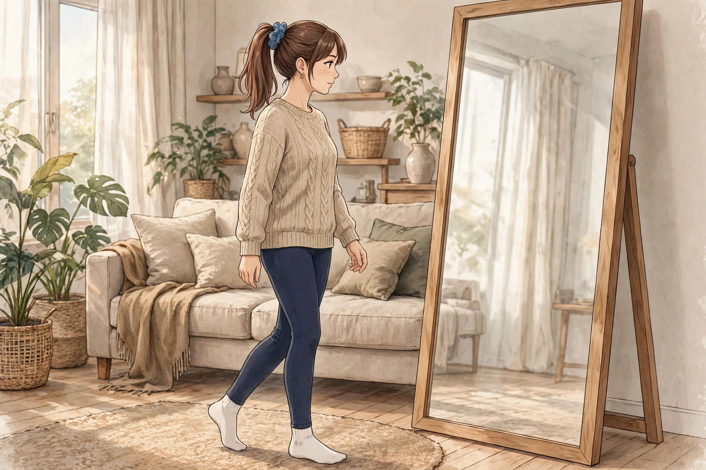

何気ない動作の積み重ねが、脚のラインと姿勢を作る理由を解説します
姿勢は、じっと立っているときだけのものではありません。立ち方の重心のかけ方と、歩くときの脚の使い方のクセが、毎日何千回と繰り返されることで、体のラインを作っていきます。
「姿勢に気をつけているのに、脚のラインが変わらない」「写真に写った自分の歩き姿に驚いた」。そんな感覚の背景には、意識していないときの動作のクセが隠れていることがあります。このページでは、立ち方と歩き方の代表的なクセ、体への影響の伝わり方、鏡でできるチェックと見直しのポイントを解説します。
姿勢というと、背筋を伸ばして立つ静止した形を思い浮かべがちです。しかし実際に体へ影響が大きいのは、動いているときの使い方です。人は1日に数千歩を歩き、立つ・座る・かがむといった動作を何度も繰り返します。1回ごとの負担は小さくても、同じクセが毎日積み重なると、使う筋肉と使わない筋肉の差が広がり、姿勢とラインに表れてきます。
逆に言えば、動作のクセは「その人の体の使い方の記録」です。どの筋肉が働き、どこに負担が寄っているかは、立ち方と歩き方を見るとよく分かります。当サロンの施術前の確認でも、静止した姿勢だけでなく、立ったときの重心と歩く様子を一緒に見ています。
信号待ちや家事の合間に、片脚へ体重を預けて立つクセです。骨盤が左右に傾き、腰の片側と太ももの外側に負担が寄ります。楽に感じる立ち方ほど、実は偏った使い方になっていることがあります。本人は「休んでいる」つもりでも、体重を支える側の脚と腰は働き続けています。
片方だけつま先が外を向く、両方とも内側を向くなど、足の向きのクセは、膝と股関節のねじれ方と連動します。向きの左右差は、骨盤の向きの差として表れることもあります。靴をそろえたときに片方だけ向きが違う、といった日常の場面でも気づけます。
膝を後ろへ押し込むように伸ばし切って立つと、太ももの前の筋肉が働きにくくなり、膝の裏と腰に負担が寄ります。ふくらはぎの張りを感じやすい立ち方でもあり、脚のむくみとも関係します。膝に力を入れず、わずかにゆるめる意識で、負担の寄り方は変わります。
つま先と膝が内側を向く内股歩行では、太ももの外側とすねに負担が寄り、脚のラインの崩れにつながります。逆に、つま先が大きく外を向く歩き方では、股関節の外側とお尻の筋肉の使い方が偏ります。どちらも、股関節まわりの筋肉のバランスが背景にあります。
足裏全体を滑らせるように歩くと、ふくらはぎの筋ポンプが働きにくく、むくみの背景にもなります。歩幅が小さい歩き方は、お尻の筋肉（大殿筋）が使われにくく、ヒップラインの下がりとも関係します。着地から蹴り出しまで足裏全体を使う歩き方は、それ自体が脚の巡りを助ける動きです。
腕をほとんど振らない歩き方では、上半身の回旋が小さくなり、背中や腰の筋肉の動きが偏ります。左右で体の揺れが大きい場合は、股関節まわりの支える力の左右差が隠れていることがあります。バッグをいつも同じ側で持つ習慣も、腕の振りの左右差を作る背景になります。
動作のクセは、負担の寄る場所を変えます。片脚重心の立ち方が続けば骨盤の高さに左右差が出て、腰の張りや肩の高さの違いとして感じられます。内股歩行が続けば膝の向きと脚のラインに影響し、O脚の見た目を強めることがあります。足の使い方の偏りは、足裏の体重のかかる場所を変え、外反母趾や足指の疲れの背景にもなります。
大切なのは、ラインの変化は「体重の変化」とは別に起こるという点です。重さは同じでも、使い方の偏りで見た目は変わります。だからこそ、動作のクセを見直すことは、美容整体の大切な柱の一つです。逆に、使い方の偏りが整えば、同じ体重でもラインの印象は変わってきます。
自分の歩き方は、意外なほど自分では見えていません。全身が映る鏡の前を、普段どおりの速さで数往復歩いてみてください（図1）。つま先の向き、膝の向き、腕の振り、体の左右の揺れを観察すると、クセが見えてきます。スマートフォンで動画を撮って確認する方法も、客観的に見られる点で有効です。

図1：鏡の前を歩く場面。静止した姿勢だけでなく、動いているときの脚の向きと体の揺れを観察します。
チェックは「良い・悪い」を判定するためではなく、自分のクセを知るためのものです。気づくことが、見直しの出発点になります。1回で全部を見ようとせず、1項目ずつ日を変えて観察すると、違いが分かりやすくなります。
道具の使い方もクセを作ります。ヒールの高い靴は重心を前へ移し、つま先側への負担と、ふくらはぎの緊張を続けます。履く機会が多い方ほど、素足で立ったときの重心の位置にも影響が残ります。また、重いバッグをいつも同じ肩・同じ腕で持つ習慣は、肩の高さの左右差と、体の傾きを作る背景になります。持つ側を時々替える、荷物を分けるといった小さな工夫でも、偏りの積み重なり方は変わります。
動作のクセは、意識だけで一気に変えようとすると長続きしません。まずは「両脚に均等に体重をかけて立つ」「つま先と膝の向きをそろえて歩く」など、一つの意識から始めるのが現実的です。硬くなった筋肉をほぐし、働きにくくなった筋肉が使える状態を作ると、意識した動作が体に馴染みやすくなります。
見直しの進み具合は、写真や動画で残しておくと分かりやすくなります。以前の歩く姿と比べることで、感覚だけでは気づけない変化を確認できます。変化が見えると、続ける意欲にもつながります。
靴の影響も見逃せません。すり減った靴底は歩き方の記録そのもので、偏った減り方はクセを固定する側にも働きます。靴底の減り方を時々確認することも、自分の歩き方を知る手がかりになります。
当サロンでは、施術前に立った姿勢と歩く様子を確認し、負担の寄っている場所と、働きにくくなっている筋肉を一緒に見ています。施術では、張りの強い部位をほぐして動きを取り戻し、歩き方・立ち方で意識するポイントをお伝えします。体のラインの悩みは、静止した姿勢だけでなく、動作のクセから整えていくことが近道になる場合があります。
歩く動作は、脚だけの動きではありません。着地の衝撃を足裏で受け、ふくらはぎと太ももが体を支え、骨盤が回旋し、背骨と腕の振りがバランスを取る。この連動のどこかが滞ると、別の場所が代わりに働き、負担が偏ります。たとえば股関節の動きが小さい方は、腰をひねって歩幅を作るため、腰の張りを感じやすくなります。足首が硬い方は、着地のたびに膝へ負担が移ります。
連動の視点で見ると、「張る場所」と「背景のある場所」がずれている理由が見えてきます。当サロンの施術で、気になる場所以外の部位にも働きかけるのは、この連動を整えるためです。歩き方のクセの見直しは、連動の滞りを一つずつほどいていく作業でもあります。
歩き方は年代でも変化します。筋肉量が少しずつ落ちる40代以降は、歩幅が小さくなり、つま先の上がりが減って、すり足に近づきやすくなります。出産を経験した方は、骨盤まわりの支え方の変化から、歩行時の体の揺れが大きくなることがあります。変化そのものは自然なことですが、負担の偏りが強くなる前に使い方を見直すことで、脚のラインと疲れにくさは保ちやすくなります。
「年齢のせい」と片づけられがちな変化の中にも、筋肉の使い方で補える部分は少なくありません。歩く速さが落ちた、坂道で疲れやすくなった、といった変化は、体からの早めのサインとして受け取ることができます。歩き方の変化は、靴の減り方の変化としても表れます。以前と減る場所が変わってきたら、体の使い方の変化のサインです。鏡や動画でのチェックを習慣にしておくことが、早く気づく助けになります。
歩くことは体に良い運動ですが、クセのある歩き方で量だけを増やすと、負担の偏りも一緒に増えます。長い距離を偏った使い方で歩くより、まずは短い距離でも、つま先と膝の向きをそろえ、足裏全体で着地する歩き方を意識する方が、ラインへの影響は良い方向に働きます。量は質が整ってから増やす、という順番が現実的です。
通勤や買い物など、日常の移動は格好の実践の場です。駅までの数分、買い物の往復など、決まった場面で意識する歩き方を取り入れると、特別な運動時間を取らなくても、使い方の記録は書き換わっていきます。歩数を記録している方は、歩数と一緒に「その日の脚の軽さ」を一言添えるだけでも、量と質の関係が見えてきます。たくさん歩いた日ほど良いのではなく、負担の偏りなく歩けた日が、体にとっての良い日です。
歩き方と立ち方のクセは、座り方ともつながっています。座っている間に縮んだ太ももの付け根や、丸まった背中の状態は、立ち上がった直後の歩き方にそのまま表れます。デスクワークの後に脚が重く感じるのは、座り姿勢で巡りが止まっていた影響もあります。立つ・座る・歩くを別々ではなく、一連の使い方として見ることが、クセの全体像をつかむ助けになります。
Q. 歩き方のクセは、意識すればすぐ変わりますか？
A. クセは長い期間の積み重ねで作られるため、意識し始めても体に馴染むまでには時間がかかります。硬くなった筋肉をほぐし、使えていない筋肉が働く状態を作ると、意識した動作が続きやすくなります。
Q. O脚は歩き方が原因ですか？
A. 骨格の形そのものと、筋肉の使い方による見た目の両方が関係します。歩き方のクセが脚のラインの見た目を強めている場合は、使い方の見直しで変化が期待できます。
Q. 靴底の減り方で何が分かりますか？
A. 体重のかかる場所の偏りが表れます。外側だけ・内側だけが早く減る場合は、着地と蹴り出しのクセの手がかりになります。
Q. 自分でチェックするときのコツはありますか？
A. 鏡の前を普段どおりに歩くことと、動画で撮ることがおすすめです。意識して「良く歩こう」とするとクセが隠れてしまうため、自然な状態を観察してください。
解説と施術は、施術歴30年・鍼灸師の資格を持つ平賀建人が担当します。登録販売者・アロマセラピスト・パーソナルトレーナーの知識も活かし、体の仕組みをできるだけ分かりやすくお伝えすることを心がけています。
この記事は専門解説シリーズの1本です。料金やご予約についてはトップページをご覧ください。